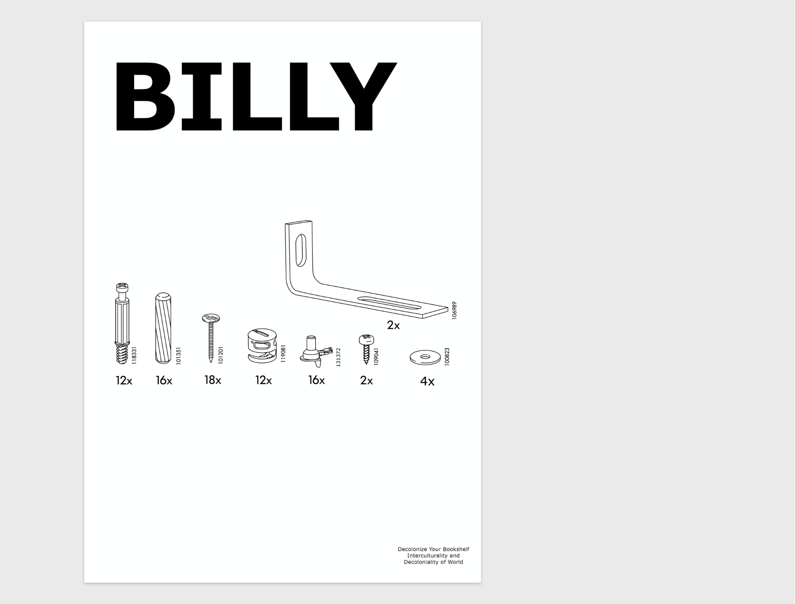
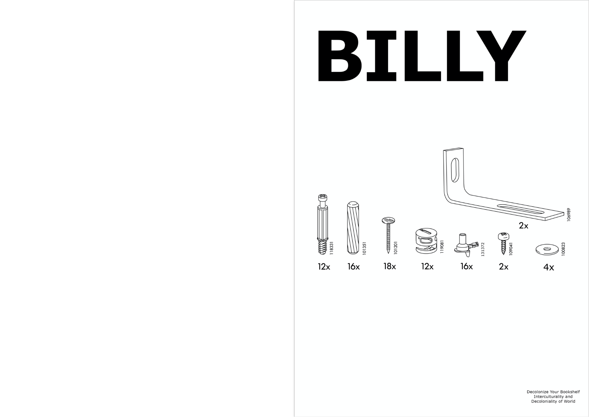
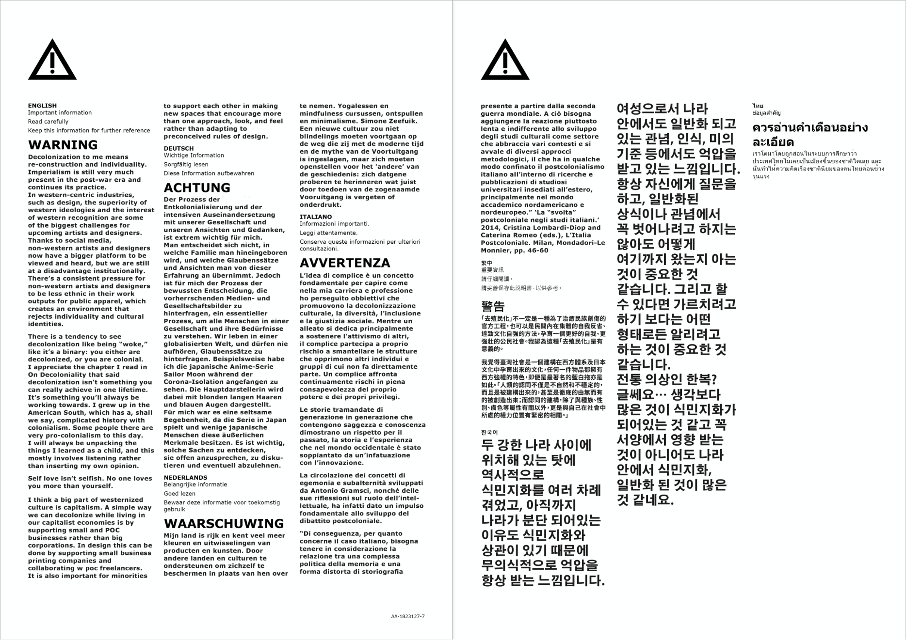
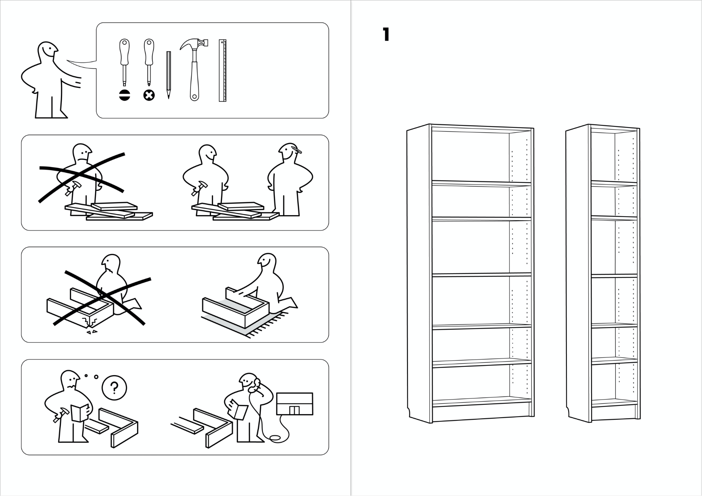
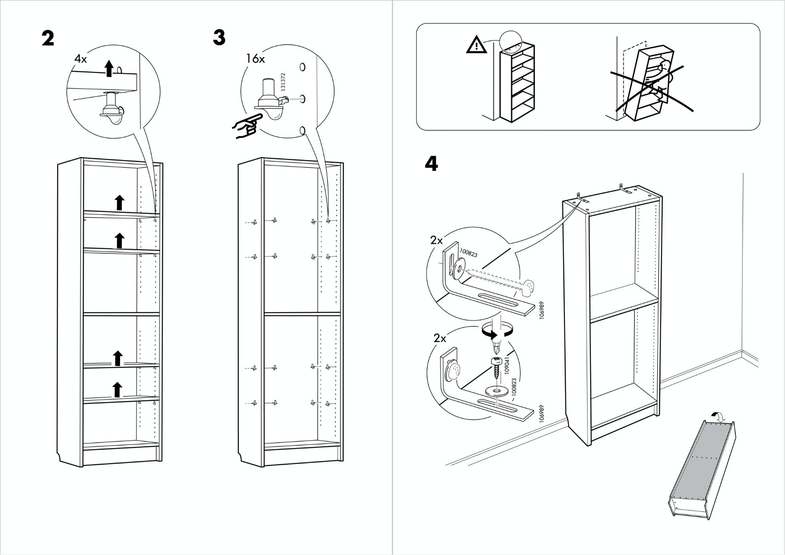
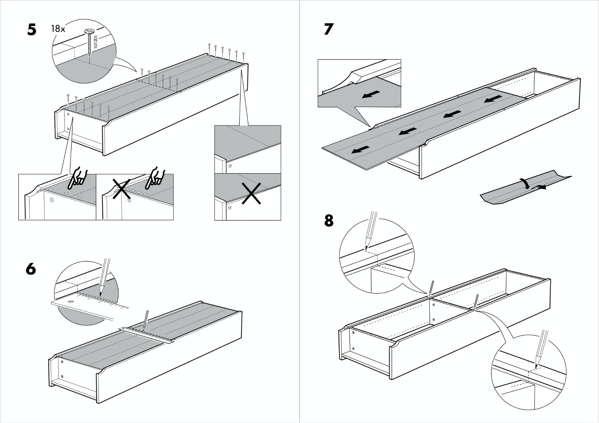
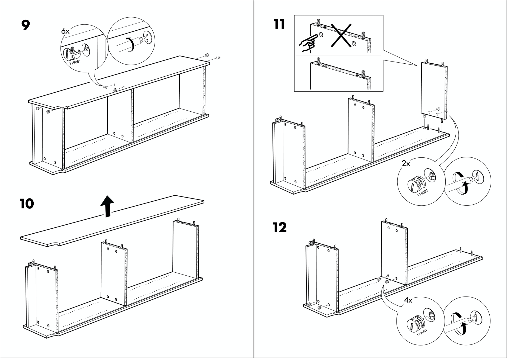
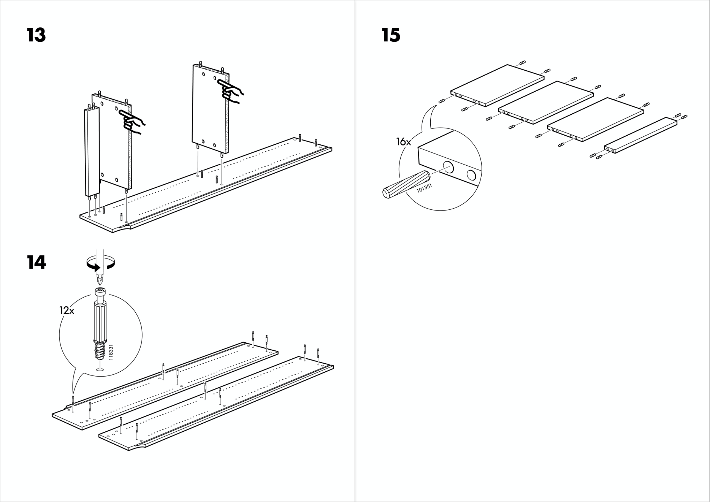
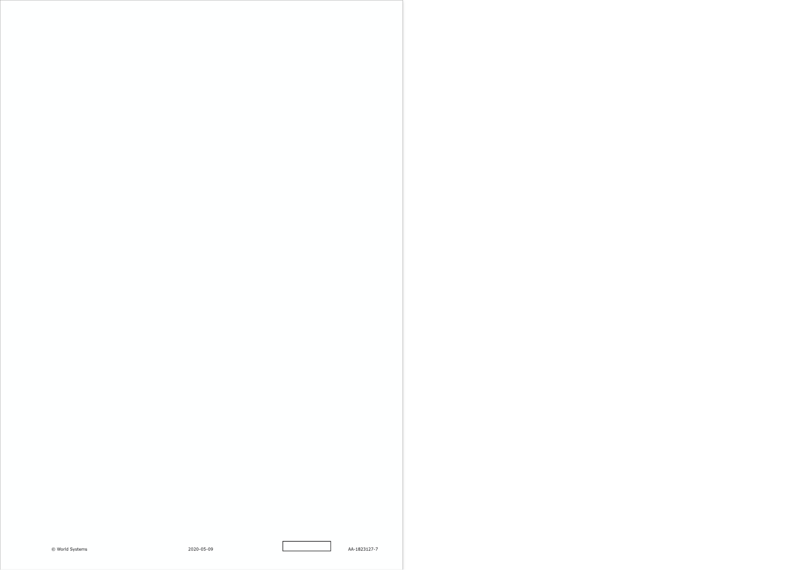

Amber Hsuan Lin

Billy
Decolonize Your Bookshelf
"We have the huge task of decolonizing interculturality, undoing Eurocentrism, and de-monolizing life, a task that ... necessarily begins with un-learning." Decolonize your bookshelf – the unlearning process. This is an ongoing project. In order to raise people’s awareness of colonization, in this project, I interview people in 36 languages about how decoloniality means to them. And then, collect them into a ‘reversed’ IKEA assembly instruction and replace its warning part with answers I have so far.
2020
Special Thanks:
Gaia Hwang,
Ryan Su,
Grace Kelly,
Emma Tseng,
Veronica Garcia,
Sibylle Hornung,
Jia-Xin Liu,
Peter Zeze, and
Jungmin Park.
Instruction
Decoloniality is the process of unlearning the existing
educational, social, racial, and cultural structure,
a proactive value of self-identifying and differentiating the state where you are now and where you can be
in the future.
The book, On Decoloniality, written by Walter Mignolo and Catherine Walsh, states in the chapter of Interculturality and Decoloniality: “Experience and history have made us realize that we live a colonized interculturality (which is not equal to concept of multiculturality), seen and created from a Western and colonial logic … As such, we have the huge task of decolonizing interculturality, undoing Eurocentrism,
and de-monolizing life, a task that follows from our
resistances and our projects and necessarily begins with un-learning.” The only way we can experiment with ways of new perspective toward a monoculture, which includes diverse beliefs, values, ideals, hopes and fears, is to act through by making changes in our behavior individually.
Answer questions below that you are confident of in your mother-tongue language. I will be so happy to hear from your voice:
How colonization is affecting you?How could you prevent colonization in a decolonial way?Which items/service in your culture do you think for now does not fit in a Western and colonial logic, but is inspiring and good for people to learn from?Who is the activist in your language representing decoloniality the most?Google “decoloniality, society and culture” in your mother-tongue language, select one sentense of discussion or statement from a trustworthy site or news.
click here to add your answer







